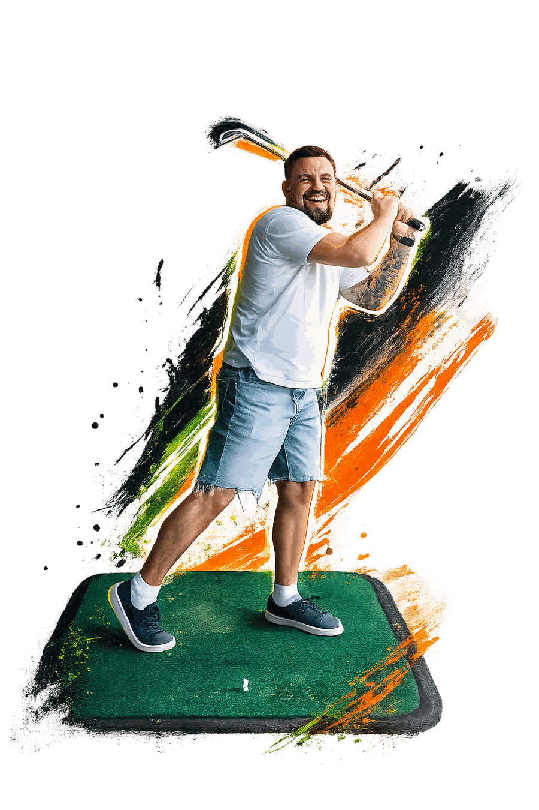

01 / Get close to the problem
I want to understand how people actually use a product. At Shipshape, that meant climbing into the crawlspaces where the sensors were installed. The context matters as much as the screen.
My approach


I want to understand how people actually use a product. At Shipshape, that meant climbing into the crawlspaces where the sensors were installed. The context matters as much as the screen.
I turn ideas into something we can try, question, and improve. At Linc, I built the experience from scratch, working with users and engineers to figure out what belonged in the product.
At DraftKings, I design for usability, performance, and consistency at scale. I bring that same attention to smaller products — right down to designing Tysha for one hand, in the dark, at 3 a.m.
I like taking responsibility beyond the design file. Building Numi, Tysha, and Karta myself keeps me close to the decisions that shape the final experience.
Where that thinking shows up
Have something in mind?
Open to senior product design roles
and select collaborations.